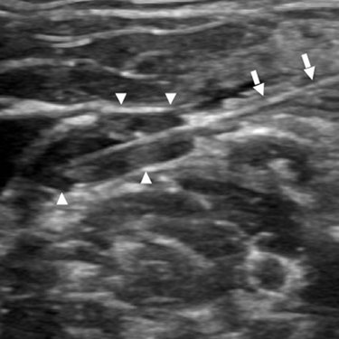

Jeffrey P. Guenette / Scientific Publications
Image-guided Ablation of Postsurgical Locoregional Recurrence of Biopsy-proven Well-differentiated Thyroid Carcinoma
Guenette JP, Monchik JM, Dupuy DE
J Vasc Interv Radiol. 2013 May;24(5):672-9
Publication Access via PubMed
 Abstract:
PURPOSE: To evaluate the clinical outcomes of ultrasound-guided percutaneous radiofrequency (RF) ablation and percutaneous ethanol injection (PEI) as salvage therapy for locoregional recurrence after resection of well-differentiated thyroid carcinoma.
MATERIALS AND METHODS: There were 42 locoregional, biopsy-proven, papillary and follicular thyroid carcinoma lesions (0.5-3.7 cm) treated, 21 with RF ablation and 21 with PEI. Of treated lesions, 35 were located in the lateral compartments, and 7 were located in the central compartment. Data points in the retrospective analysis, determined beforehand by the investigators, were progression at the ablation site, serum thyroglobulin levels before and after the procedure, and procedural complications.
RESULTS: Average follow-up after RF ablation was 61.3 months and after PEI was 38.5 months. No progression was detected in the region of ablation for any of the lesions treated with RF ablation. Local progression was detected 4-11 months after ablation in 5 of the 21 lesions treated with PEI, 3 in the lateral compartment and 2 in the central compartment; all of the lesions were successfully retreated with repeat PEI, RF ablation, or surgery. Permanent vocal cord paralysis occurred after one RF ablation procedure of a lateral compartment supraclavicular node. There were no complications after PEI.
CONCLUSIONS: This case series provides long-term follow-up evidence of the safety and efficacy of ultrasound-guided RF ablation and PEI for control of locoregional recurrence of well-differentiated thyroid carcinoma after surgery.
Return to Home Page